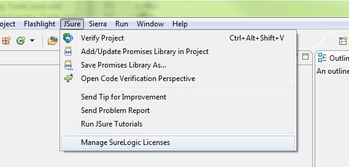
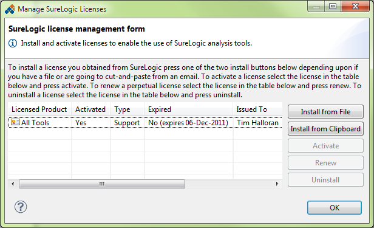
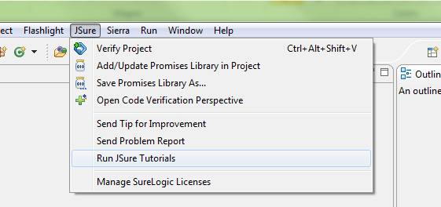

We find that installing the tools, especially for the first time, is better done from an archived update site, which you can find here. This archive contains the Sierra, JSure, and Flashlight features. If you are an advanced Eclipse user, you can also use our update site, located at http://surelogic.com/static/eclipse and skip to step 3.
Follow one of the next three steps (and skip the others) based on what version of Eclipse you are using.
-
In Eclipse 3.5.1 (or greater): Select 'Help | Install New Software…' to open the 'Install' dialog. Click the 'Add…' button in the upper-right of the dialog. In the 'Add Site' dialog that opens select the 'Archive…' button and point the file selection dialog that appears to the to the SureLogic archived update site file downloaded in step 1, then press 'Open' followed by 'OK'. The 'Install' dialog should appear as shown in the figure below.

Choose the features you want to install (as shown above), and press 'Next >' and step through the remaining wizard dialog steps. The features you are installing are not digitally signed, however, you should allow them to be installed if you are warned by Eclipse that it can't verify them. Finally, you should restart Eclipse when the installation is completed.
-
In Eclipse 3.4: Select 'Help | Software Updates…' to open the 'Software Updates and Add-ons' dialog. Select the 'Available Software' tab and click the 'Add Site…' button. In the 'Add Site' dialog that opens select the 'Archive…' button and point the file selection dialog that appears to the to the SureLogic archived update site file downloaded in step 1, then press 'Open' followed by 'OK'. The 'Software Updates and Add-ons' dialog should appear as shown in the figure below.

Choose the features you want to install, then press 'Install…' (in the upper-right of the dialog not 'Close" in the lower-right of the dialog) and step through the remaining wizard dialog steps. The features you are installing are not digitally signed, however, you should allow them to be installed if you are warned by Eclipse that it can't verify them. Finally, you should restart Eclipse when the installation is completed.
-
In Eclipse 3.3: Select 'Help | Software Updates | Find and Install…' to open the 'Install/Update' dialog. Select Search for new features to install and press 'Next >'. Press the 'New Archived Site…' and point the file selection dialog that appears to the SureLogic archived update site file downloaded in step 1 and press 'Open' and then 'OK'. Ensure the archive file is the only site checked and press 'Finish'. The 'Updates' dialog should appear as shown in the figure below.

Choose the features you want to install (as shown above), then press 'Next >' and step through the remaining wizard dialog steps. The features you are installing are not digitally signed, however, you should allow them to be installed if you are warned by Eclipse that it can't verify them. Finally, you should restart Eclipse when the installation is completed.
When Eclipse restarts you should see an item on the Eclipse main menu for each tool that you installed. The first thing you need to do is to install the license provided to you by SureLogic. To do this select the 'Manage SureLogic Licenses' menu choice from the Eclipse main menu from any of the tools (they all open a common dialog) as shown in the figure below.
In the dialog that appears, highlight the type of license you have, e.g., Flashlight, and press the 'Install License' button as shown in the figure below.
See the 'Getting started' chapter of any of the tool User Guides for information on how you install your license and get up and running with the tool. The tool User Guides can by opened by selecting 'Help | Help Contents' from the Eclipse main menu
To run the tutorials for Sierra, Flashlight, or JSure select the 'Run Tool Tutorials' menu choice from the Eclipse main menu for that tool. For example, For the Flashlight tool you would select 'Flashlight | Run Flashlight Tutorials' from the Eclipse main menu as shown in the figure below.
This action will import the tutorial projects into your workspace and open the Eclipse help up to the beginning of the first tutorial. We recommend that you take the time to step through each tutorial.
Also notice the 'Send Tip for Improvement' and 'Send Problem Report' menu items in the figure above. These menu items are your direct link to interact with the SureLogic engineers about your ideas to improve our tools and to report any problems you encounter.
To learn more about how to use the tools select 'Help | Help Contents' and open the Sierra, Flashlight, or JSure User Guides. If you have installed JSure, you should also read the JSure Annotation Guide. These guides contain tutorial and reference information about how to use the tools effectively.
You can stay current with the latest versions of all of the SureLogic tools by checking for updates from Eclipse. If you have not configured Eclipse to periodically check for updates, you can check for tool updates by selecting 'Help | Check For Updates' in Eclipse 3.5, 'Help | Software Updates…" in Eclipse 3.4, and 'Help | Software Updates | Find and Install…" in Eclipse 3.3. This will check the SureLogic update site at http://surelogic.com/static/eclipse for any updates, regardless of whether you installed the tools from the archive site or from the remote site.